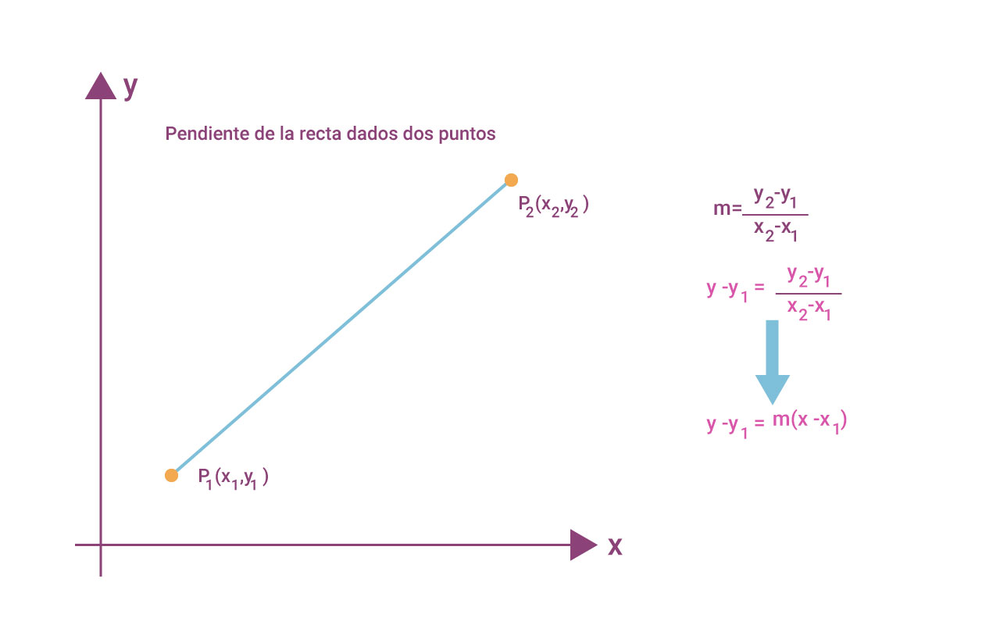

Uno de los conceptos básicos en geometría es el de línea recta, o simplemente recta, por tal motivo, las actividades que se realizan a lo largo de esta unidad se limita a las rectas que están en un plano de coordenadas. Esto permitirá aplicar métodos algebraicos para estudiar sus propiedades, el concepto de pendiente es fundamental en el estudio de la línea recta. Dos de los objetivos principales en las diferentes actividades a realizar son:
1. Dada una recta en el plano de coordenadas, deducir una ecuación cuya gráfica corresponde a .
2. Dada una ecuación de una recta en un plano coordenado, graficar la ecuación.
Las primeras formas que estudiaremos sobre este lugar geométrico son las siguientes:

Figura 1. Formula para obtener la pendiente de la recta.
Ángulo de inclinación Pendiente de la Recta.
Los conceptos pendiente y ángulo de inclinación de una recta están íntimamente ligados, ya que la definición de uno depende de la del otro; dicho de otro forma, hablar de uno es hablar del otro.
La definición de estos conceptos indica la forma de variación de 2 puntos cualesquiera de una recta. Por otra parte, se llama pendiente (m) de una recta a la tangente trigonométrica de su ángulo de inclinación ( ), entonces:
$m= \ tan \ \alpha$
Es decir, la pendiente es igual a la tangente del ángulo de inclinación.
Considerando las expresiones algebraicas que relacionan la pendiente y su ángulo de inclinación considera los siguientes ejemplos.
Ejemplo 1.
Hallar la pendiente de la recta cuyo ángulo de inclinación es de 45°
Solución: Considerando la expresión $m= \ tan \ \alpha$ Tenemos
$m= \ tan \ 45 $ Usando la calculadora científica $m=1$
Ejemplo 2:
Hallar el ángulo de inclinación de la recta cuya pendiente vale 0.524
Solución: Considerando la expresión $m= \ tan \ \alpha$
$0.524 = \ tan \alpha$
$\alpha = tan^{-1}(0.524) = 27.65 \ grados$
Ejemplo 3
Hallar la pendiente y la inclinación de la recta que pasa por los puntos $A(-1,-2) \ y \ B(4,8)$
Solución: Considerando la fórmula de la pendiente de la figura 1 y los puntos $A(x_1,y_1) \ y \ B(x_2,y_2)$ Obtenemos:
$m = \frac{y_2 - y_1}{x_2 - x_1}$
$m=\frac{8-(-2)}{4-(-1)}=\frac{8+4}{4+1} = \frac{10}{5}$
$m=2$
Así mismo,
$tan \ \alpha = m$
$tan \ \alpha = 2$
$\alpha = tan^{-1}(2)= 63.43 \ grados$